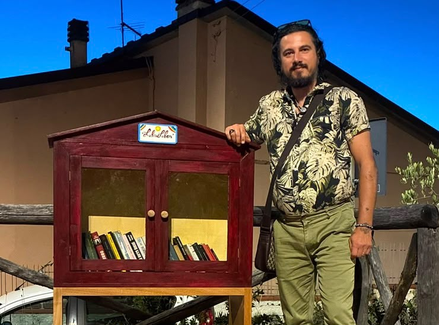

Simone Birindelli
Ideatore del progetto
Simone è l'ideatore di Progetto Libri Liberi. Dal 2015 porta avanti l'idea di creare casette in legno dove adulti e bambini possano trovare libri, racconti e giochi gratuiti, lasciarne altri e vivere la cultura come gesto quotidiano di condivisione.